If you have been interested in plants for a while, it’s nearly impossible that you never heard of
Satoshi Kawamoto,
the Japanese plant artist and creative director behind Green Fingers.
Satie San, as he is called by his friends and loved ones, has a unique way of working with greenery,
which he explores in the several books that he wrote about plants and styling.
He also decorated many shops and department shops around the world, always focusing on making greenery a natural and familiar presence of the surroundings.
His style is very recognizable, with a hint of wabi-sabi, lots of natural textures like wood stumps, driftwood, dried mosses, and vintage furniture.
At the end of 2017, well known outdoor brand Woolrich opened their new Milan flagship store of 650m2 where they sell their full collection of outdoor fashion.
The flagship store also houses an Extreme Weather Experience room (where you can try the Woolrich outdoor wear) and in the back of the shop,
you’ll find a wonderful green plant shop with a small mini garden terrace: Green Fingers.
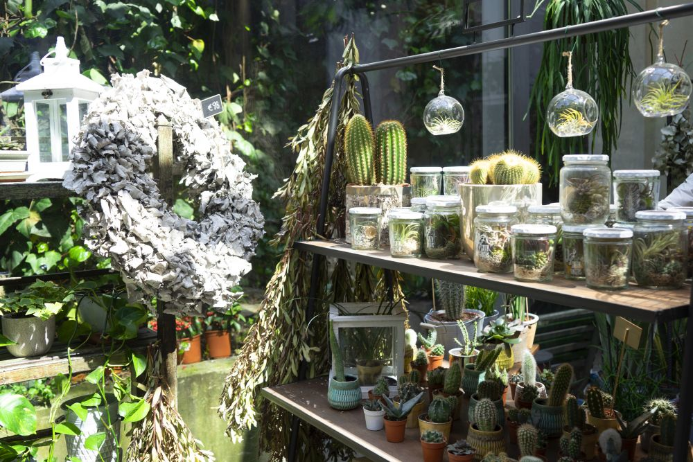
It’s not just a few cacti here and there, but a true experience of style. Tall Euphorbia and hanging Lepismium Bolivianum plants grow side by side, among flea-market-sourced accessories, Japanese-made housewares, dried greenery and flower wreaths, and some trinkets designed by Satoshi Kawamoto himself. “People who are not interested in plants but who are interested in looking for clothes, may end up buying plants,” And the opposite is true as well “people who are looking for plants may end up buying some well designed Woolrich clothing.”
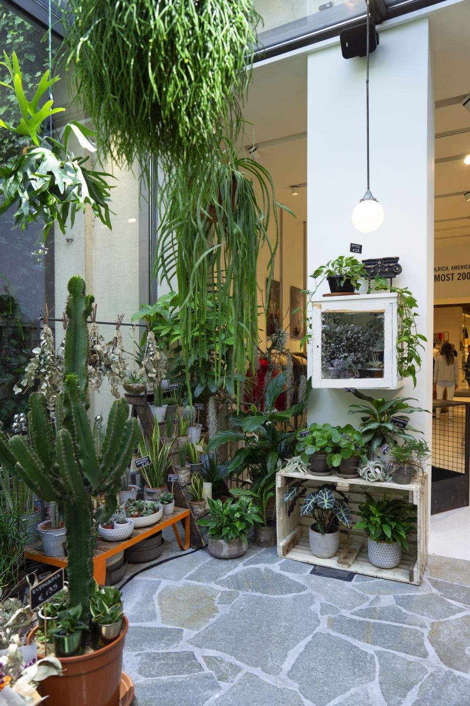
What makes the Green Fingers shop in Milan different from other plant shops is Satoshi Kawamoto’s signature styling: the styling of the plant around the shop is not glossy and sleek, but lived-in, earthy and a true feast for the eyes. The diversity of plants, the different textures and shapes, in combination with vintage plant pots, ceramic bowls; terracotta planters and dried leaves and flowers make that you discover something new in every corner.
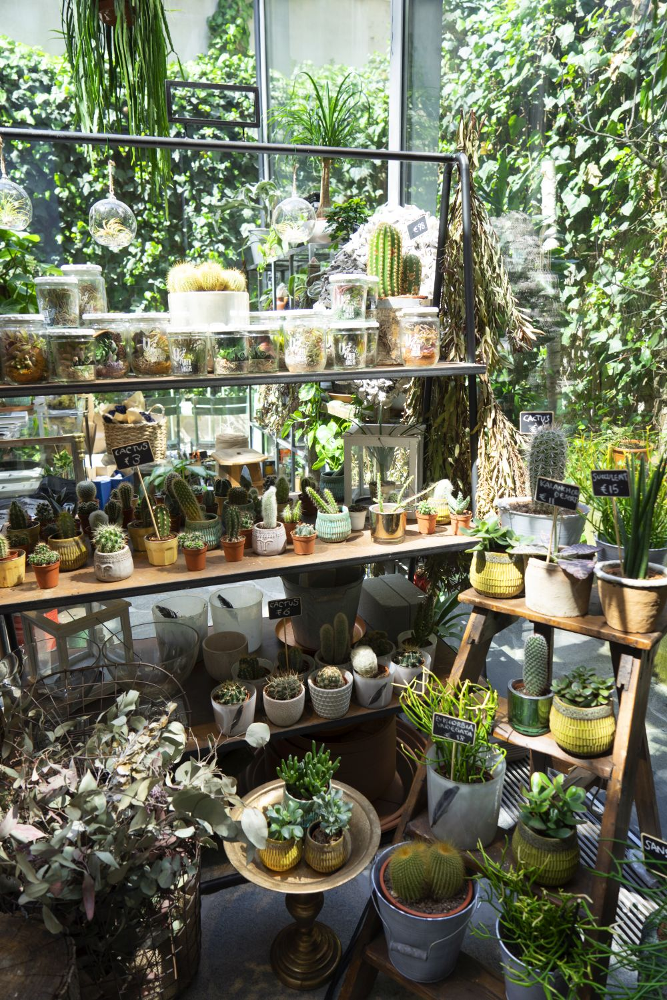
Green Fingers offers plants for any budget, for people with or without* so-called green fingers:
* Just a little side note: we don’t believe in having green fingers, or a black thumb. If you are willing to invest a little bit of TLC (time, love and care) into your new green friend(s), and if you do your homework, you can have a healthy and thriving jungle at home. More about that in our Urban Jungle book,
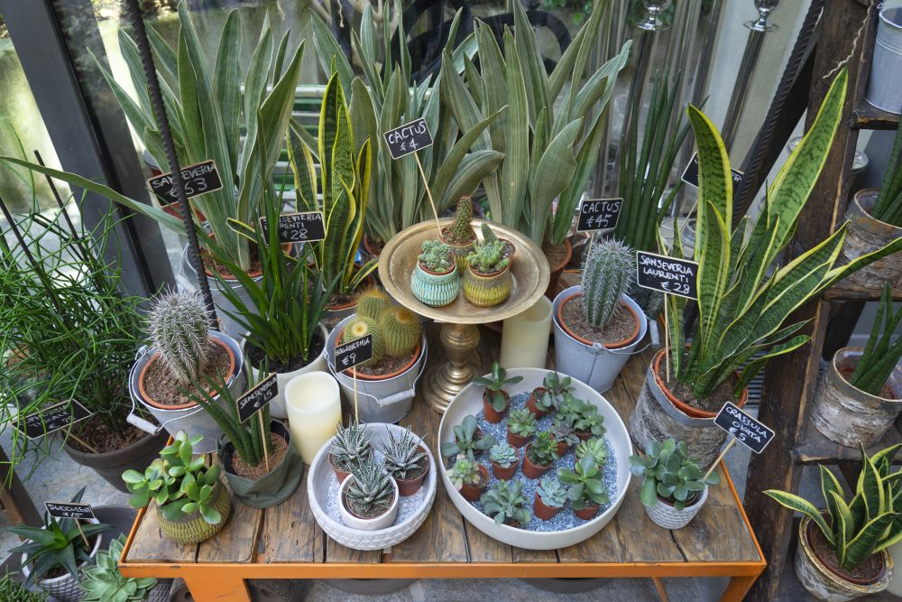
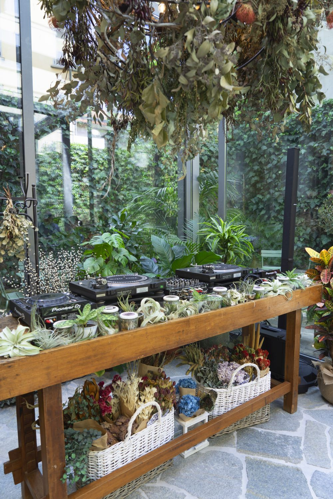
Would you rather pick a small Crassula ovata (Jade plant), a spiky cactus plant in a small ceramic planter or one of the many different species of Sansevieria? Isn’t this the coolest DJ-booth ever?Wabi-sabi with Tillandsia airplants in a wooden apothecary cabinet. If you have read our Urban Jungle book, you may recognize this idea from Pepper’s beautiful green home!
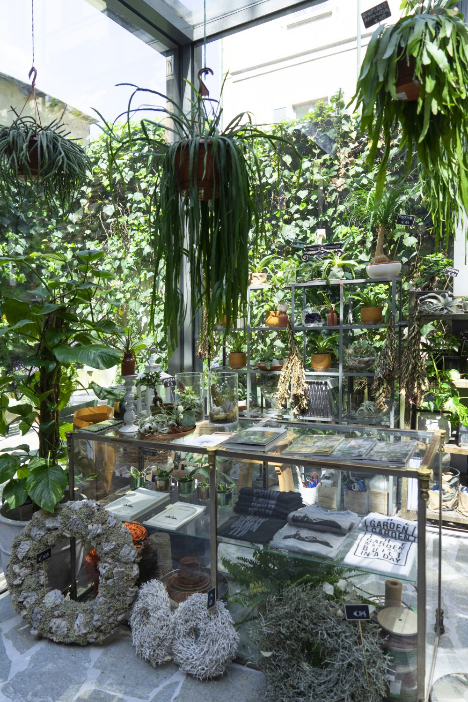
“The garden was not built in a day”. These words are tattoed on Satie San’s arm and represent the need for patience when growing something truly inspiring. You can find the text also on T-shirts in the shop. Or rather go for the “Grow Damn It”-shirt if you are still learning about growth and patience *wink wink*. Satoshi Kawamoto’s books about styling and plants are also available:
Little Green Stories in Ghent
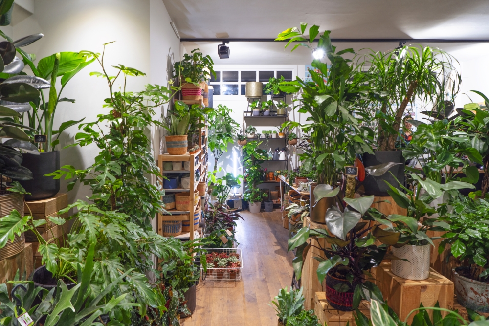
In these last weeks before the holidays, most of us have been shopping a little bit, to find some special gifts to surprise our loved ones. If you are lucky (or love shopping for yourself!) you may have been plant shopping as well! We did so too! Actually we don’t need any excuse to adopt a new plant, or that one special plant that has been on top of our wishlist for months, but we also love to visit new plant shops when we’re traveling. We do this twice a week “virtually” on our @urbanjungleblog Instagram account where we share the most amazing plant shops from around the world. And today we’re taking you to a new (to us) plant shop in Ghent, Belgium here on the blog.
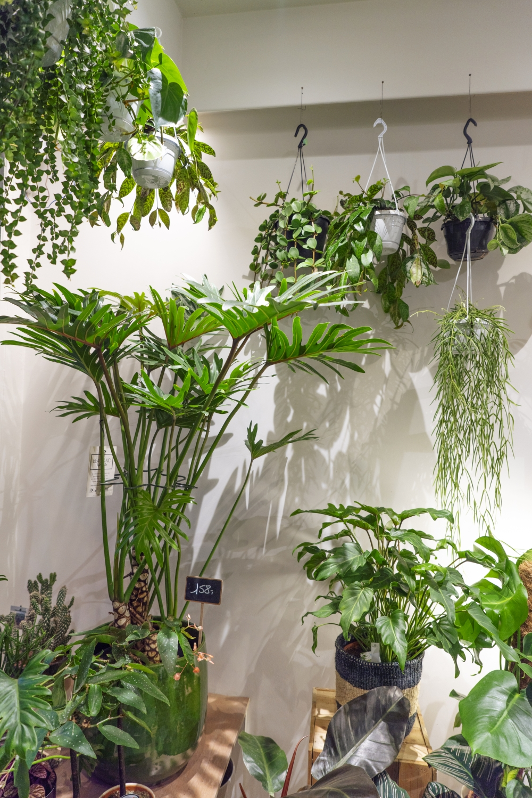
We stumbled upon this cute and green shop called “Little Green Stories ” in the heart of Ghent by accident: our eyes caught a green shop window with lots of houseplants… and one book: our own Urban Jungle book! Owner Nele recognized us immediately when we entered the shop and showed us around her green universe. And while you don’t see many people in these photos, it was buzzing with plant lovers coming in to buy new plants and ask for plant care tips for their plants at home. That’s what we love most about the plant community: sharing knowledge, nerding about plants: basically having a good time with like minded folks!
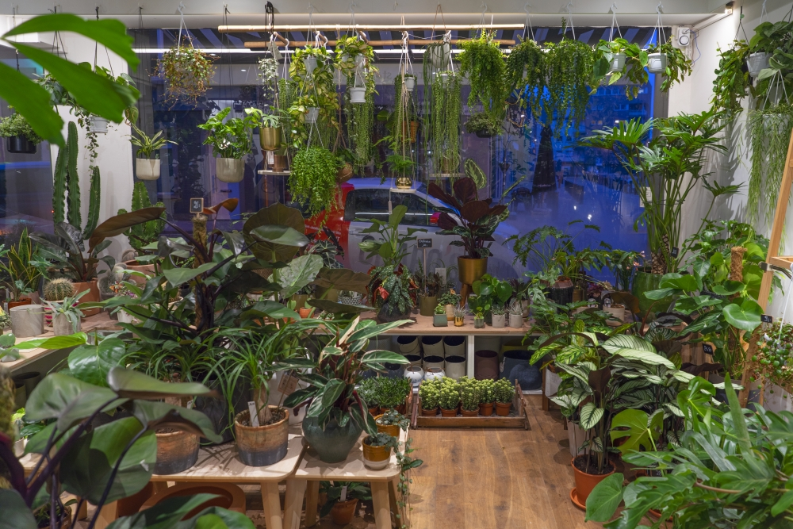
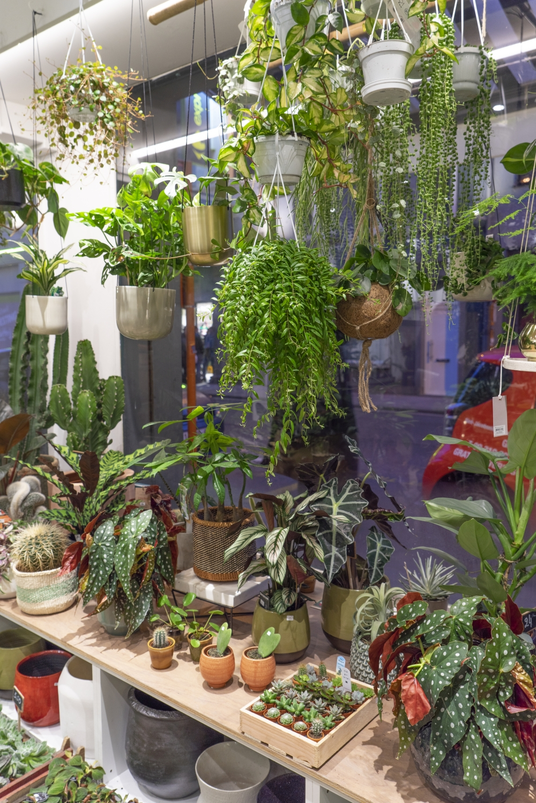
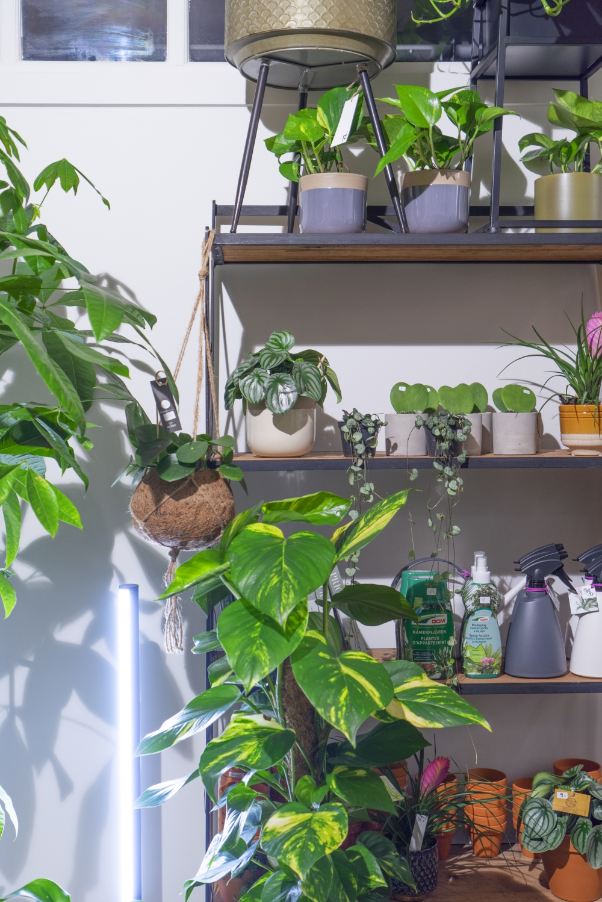
As you can see Little Green Stories is a very green shop, with a large choice of aroids, wax plants, cacti, succulents, air plants, as well as many plant pots and baskets to match your green purchases. The selection of plants is completely different from the local garden centers in the area and come with care tips from Nele. She will help you find the plant that matches your lifestyle and living conditions or she can take care of finding you that special plant that you absolutely need to have. Plants that come from growers are usually quite perfect: they grow in perfect warm and bright conditions with plant food and water that is perfectly adapted to their needs. Once they arrive at home, the conditions are different, which changes the growth of a plant. It gives them character, a new shape and a new little green story to tell 😉
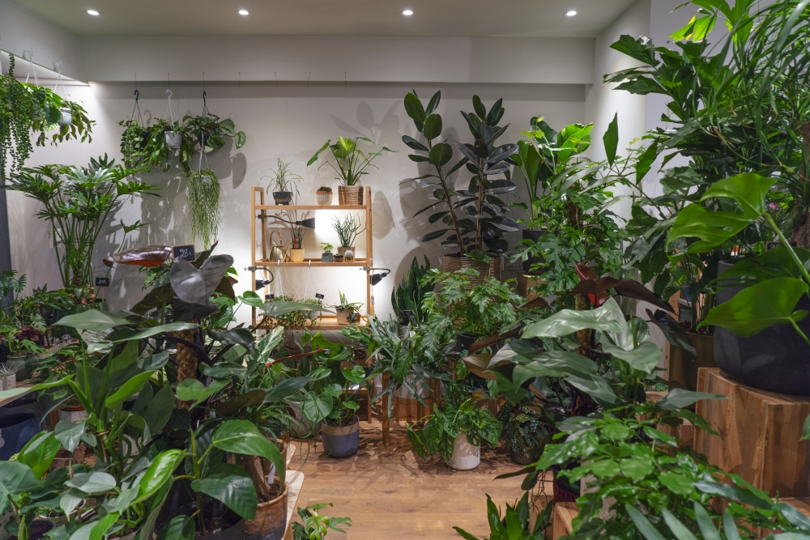
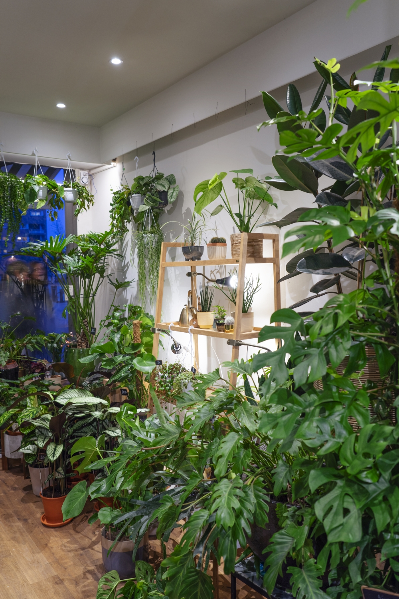
Part of the selection of plant accessories stocked at Little Green Stories are from local Belgian designers and artisans, like the Dodecahedron 3D printed pots or the wooden plant stands & furniture from Studio Zaag. We also spotted these nice House Raccoon pots in the shop! Made from a waste product of marble production, they are super soft high quality concrete. For every House Raccoon pot you buy, they plant a tree!
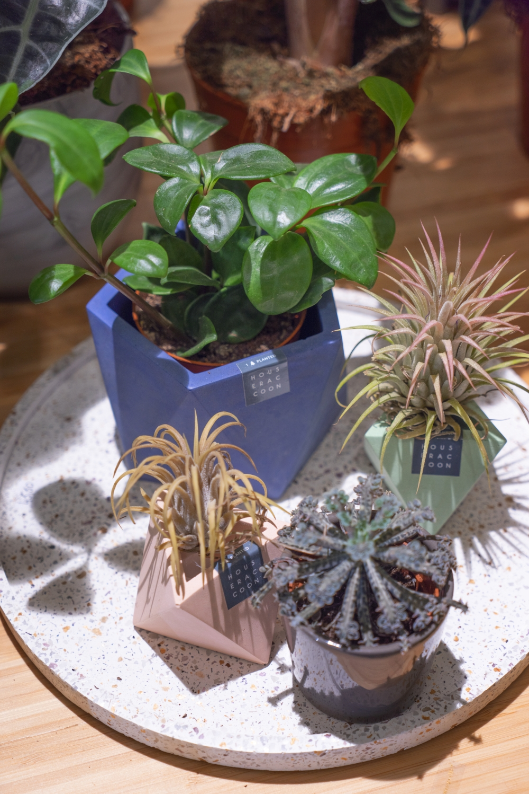
Every plant shop has its own personality, just like their many different shop owners! Some like to propose oversized plants, others prefer cactus & succulents, some have a preference for aroids or subtropical plants or focus on beautiful plant accessories. But one of the things we had never seen before are these posters with easy plant care tips for a large variety of houseplants. Instead of looking up the plants that you bought online or in a plant encyclopedia or book, you can simply snap a picture of the plant you just purchasedat Little Green Stories and you’ll have the first basic care tips. Clever, right?
Calathea lancifolia and Calathea ornata: